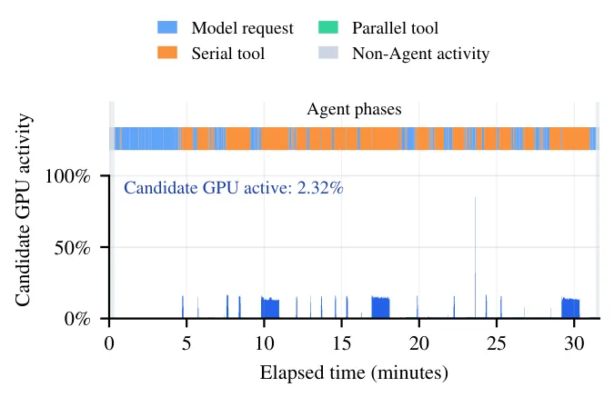
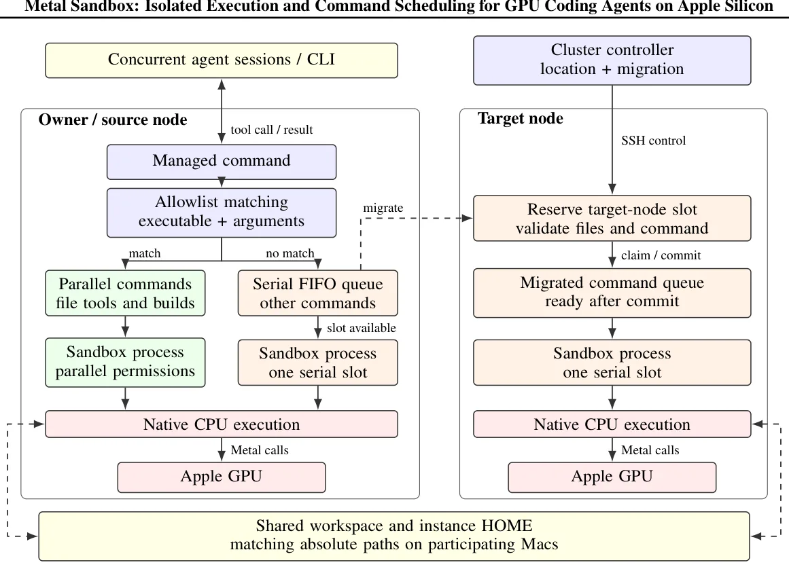
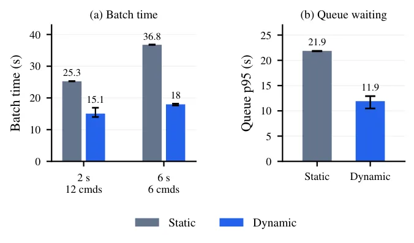

O Problema da Ineficiência em Sessões de Agentes
A inferência eficiente em dispositivos (on-device) exige kernels que utilizem os aceleradores locais de forma efetiva. No ecossistema Apple, a API Metal e a linguagem de shading são fundamentais para aproveitar os chips da série M em Macs e da série A em iPhones. A memória unificada desses processadores facilita o fluxo de trabalho entre CPU e GPU, sendo essencial para frameworks como o MLX. Melhorar a capacidade dos modelos de linguagem de gerar kernels Metal eficientes é crucial para otimizar aplicações em dispositivos Apple.
Modelos de linguagem podem gerar e iterativamente melhorar kernels de GPU usando feedback de compiladores, correção e desempenho. Projetos como KernelBench e KernelGYM fornecem ambientes de avaliação e coleta de dados para essa tarefa. No entanto, o treinamento e a avaliação desses modelos requerem agentes interativos que preparam dependências, editam programas, compilam candidatos e obtêm feedback. Esses agentes alternam entre solicitações ao modelo, edição de código, preparação de CPU e execução de candidatos na GPU.

Análise da Ociosidade da GPU
A observação crítica feita pelos autores é que a capacidade da GPU fica ociosa por grande parte do tempo de execução de um agente. Em uma sessão típica de geração de kernel Metal, registrada com Apple Instruments Metal System Trace, a atividade da GPU totalizou apenas 44,0 segundos em 31,6 minutos. Isso representa 2,32% do tempo total da sessão. A maior parte do tempo é gasta em fases que não envolvem execução direta na GPU, como solicitações ao modelo e preparação de arquivos.
Essa disparidade sugere que o gargalo não é a capacidade de computação da GPU, mas sim a coordenação entre as fases do agente e a execução. Se múltiplos agentes rodarem simultaneamente no mesmo hardware, as filas de comandos podem ficar desbalanceadas, levando a tempos de espera longos. A solução proposta deve permitir que comandos paralelos (como edição de texto) rodem livremente, enquanto comandos que usam a GPU sejam agendados de forma a maximizar o uso do acelerador.
Metal Sandbox: Isolamento e Agendamento
Metal Sandbox é a infraestrutura proposta para resolver esses problemas. Ela combina três componentes principais: acesso restrito a arquivos por instância, execução nativa de comandos e agendamento de comandos entre Macs interconectados. Cada agente mantém seu próprio espaço de trabalho e ambiente de desenvolvimento privado, isolado do host e de outros agentes. Isso é necessário porque agentes precisam de shell commands, compiladores e programas Metal sem acesso irrestrito aos arquivos do usuário host.

Mecanismo de Agendamento de Comandos
O núcleo do Metal Sandbox é o agendamento de comandos em nível de comando. Os comandos são classificados em duas categorias: paralelos e seriados. Comandos paralelos, como inspeção e edição de arquivos, não precisam da GPU e podem rodar concorrentemente sem esperar por nenhuma fila. Comandos seriados, que executam ou cronometram trabalho na GPU, entram em uma fila serial em cada Mac. Apenas um comando serial pode usar a GPU por nó a qualquer momento.
Migração de Comandos entre Nós
A serialização por nó, por si só, não resolve o desbalanceamento de carga. Em clusters de Macs, alguns nós podem ter filas longas enquanto outros estão ociosos. Metal Sandbox permite que comandos seriados elegíveis migrem para Macs disponíveis. Isso ocorre através de um protocolo de reserva, reivindicação e confirmação. Se um comando está esperando na fila de um nó ocupado, ele pode ser movido para um nó livre, executado lá e retornar o resultado para o agente original.
Integração com Harbor e Workflow
A infraestrutura se integra ao Harbor, que suporta tarefas de execução, verificação automática e coleta de trajetórias. Isso permite um workflow comum para agentes como Claude Code, Codex e mini-SWE-agent. O controlador gerencia as solicitações, e os nós executam os comandos. A integração facilita a coleta de dados para treinamento de modelos, já que as trajetórias de execução são registradas e verificadas numericamente.
Configuração Experimental
Os experimentos foram conduzidos em quatro Mac mini com processadores Apple M4, 32 GiB de memória por nó e macOS 27.0.1. Os nós são interconectados por uma switch de Ethernet gigabit. Dois owners (instâncias de controle) são preparados por nó. Workspaces compartilhados usam montagens SMB em caminhos absolutos correspondentes, e solicitações de controle usam CLI remoto via SSH.
Cargas de Trabalho e Kernels Metal
As cargas de trabalho consistem em seis kernels Metal escritos à mão, incluindo operações de matriz e convolução. Os inputs são arrays determinísticos de float32. Um runner em Objective-C++ é compilado com -O2 antes dos batches medidos. Cada comando carrega e compila a fonte Metal, cria seu pipeline e buffers, e submete o kernel repetidamente. Após cada submissão, o sistema espera até a conclusão (waitUntilCompleted()) para ler timestamps de início e fim da GPU.
Protocolo de Medição
Cinco submissões servem para aquecimento (warmup), seguidas por pelo menos trinta amostras de timestamp válidas. O loop repete submissões até que o tempo decorrido atinja um mínimo de dois ou seis segundos, incluindo encoding, submissão e espera. Os resultados são escritos para verificação de correza externa. O throughput é medido como o número de comandos completados dividido pelo tempo do batch, expresso em comandos por hora.
Baselines e Design de Comparação
A comparação mantém constantes o controlador, implementações Metal, máquinas, cargas de trabalho, runner, armazenamento compartilhado e verificador numérico. Dois baselines são comparados: agendamento estático (comandos executam no nó proprietário, sem migração) e agendamento dinâmico (comandos seriados podem migrar para nós disponíveis). As submissões podem ser balanceadas (round-robin entre nós) ou concentradas (todos os comandos submetidos através de duas instâncias no nó de gerenciamento).

Resultados: Throughput e Escalabilidade
Os resultados mostram ganhos significativos de throughput. Em submissões balanceadas com 12 comandos por batch, a execução estática diminui o tempo de batch de 25,2 segundos (1 nó) para 6,62 segundos (4 nós). Com agendamento dinâmico, os tempos são 25,1, 12,8 e 6,61 segundos. Em batches balanceados, nenhum comando migra, pois a carga já está distribuída. O ganho vem da execução paralela nos nós disponíveis.
Resultados: Submissão Concentrada
O ganho real da migração aparece em submissões concentradas, onde todos os comandos são submetidos através de um único nó. Nesse cenário, o agendamento dinâmico permite que comandos em espera migrem para os outros três nós ociosos. Isso resulta em um aumento de 1,68x a 2,05x no throughput de comandos sob demanda concentrada, comparado ao agendamento estático. A migração equilibra a carga e reduz drasticamente o tempo de espera na fila.
Replay de Trajetórias de Agentes
Os autores também repliaram 16 trajetórias estáticas de agentes sob agendamento dinâmico. As trajetórias foram medidas em condições reais, capturando tempos de espera e execução. A simulação mostrou uma redução de 18,8% no tempo médio de espera de ferramentas e uma redução de 22,3% no tempo elapsed do batch. Isso assume durações de fase inalteradas, focando apenas no impacto do agendamento.
Limitações e Escopo
O estudo se limita a quatro Mac mini M4. A escalabilidade para clusters maiores não é medida. As cargas de trabalho são kernels Metal específicos e determinísticos, o que pode não representar a variabilidade de cargas de trabalho de IA geral. A migração de comandos adiciona overhead de comunicação de rede, que foi minimizado mas não eliminado. O sistema é projetado para treinamento e avaliação de modelos geradores de kernels, não para inferência em produção.
Conclusão
Metal Sandbox oferece uma infraestrutura robusta para treinar e avaliar modelos que geram kernels Apple Metal. Ao combinar isolamento de arquivos, execução nativa e agendamento dinâmico de comandos, ela maximiza o uso da GPU em clusters de Macs. Os resultados mostram ganhos de throughput e redução de espera, tornando o ciclo de desenvolvimento de kernels mais eficiente. O código-fonte do Metal Sandbox e do Harbor está disponível no GitHub.
O que fica
- A GPU fica ociosa por mais de 97% do tempo em sessões individuais de agentes de código, criando um gargalo de coordenação.
- O agendamento dinâmico permite a migração de comandos serializados entre Macs, equilibrando a carga e aumentando o throughput em até 2,05x.
- O isolamento de arquivos por instância é crucial para permitir a execução segura e concorrente de múltiplos agentes em um mesmo hardware.
- A integração com o Harbor facilita a coleta de trajetórias e verificação automática, essencial para o treinamento de modelos geradores de kernels.
Paper original: Metal Sandbox: Isolated Execution and Command Scheduling for GPU Coding Agents on Apple Silicon
Comentários
Nenhum comentário ainda. Seja o primeiro.